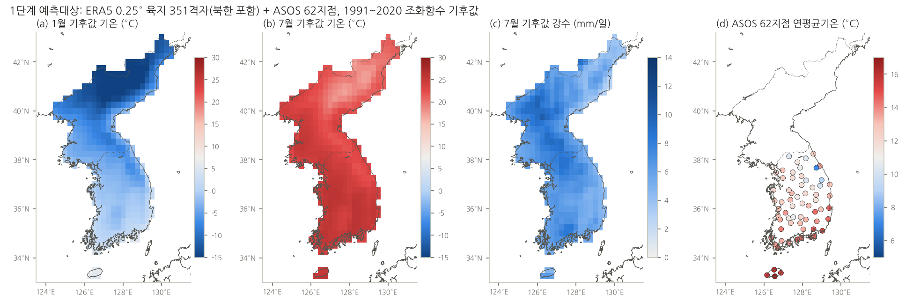
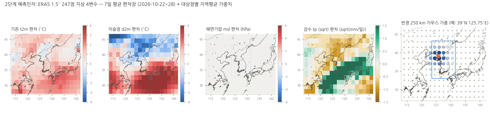
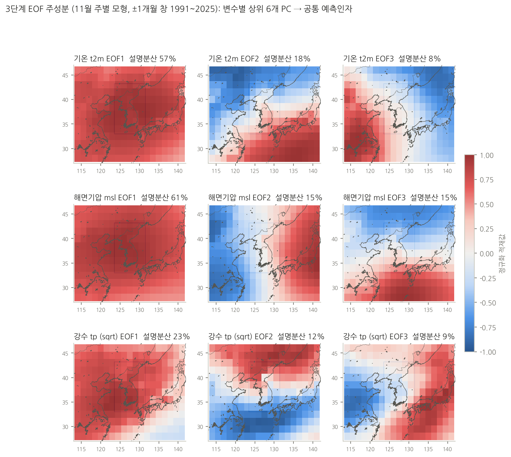
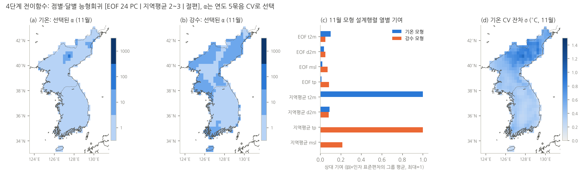
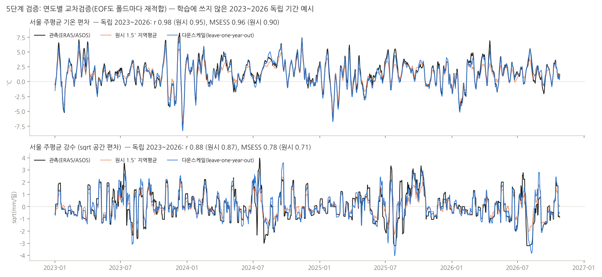
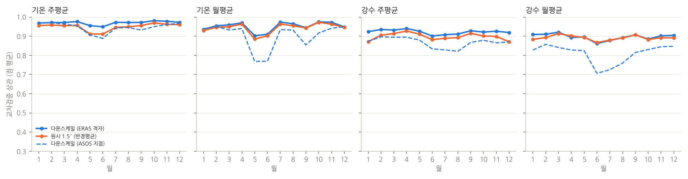
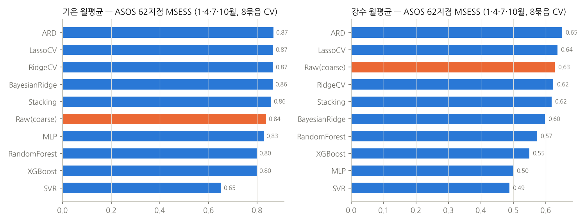
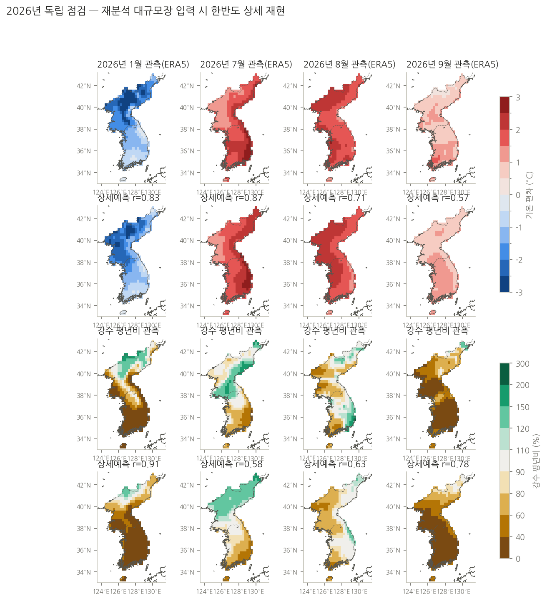
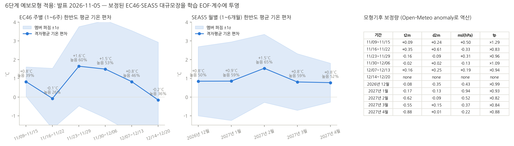

PyESD 전과정을 한반도 EC46·SEAS5 상세예측에 적용한 기록
Dan-Boat/PyESD가 정의한 통계적 다운스케일링 절차(예측대상 → 예측인자 → 표준화·EOF → 전이함수 적합 → 교차검증 → 예측모형 적용)를 단계별로 그대로 따라가며, 북한을 포함한 한반도 0.25° 412격자와 ASOS 66지점(제주 4 포함)에 대해 ECMWF EC46(주 1~6주)·SEAS5(월 1~6개월) 기온·강수 상세예측을 만들고 그 결과를 표출합니다.
PyESD 절차와 이번 구현의 대응
PyESD는 예측대상(predictand) 객체에 예측인자(predictor)를 붙이고, 표준화·특성선택·회귀모형 적합·교차검증·GCM 투영을 메서드로 제공합니다. PyPI의 pyESD 1.0.7은 scikit-learn 1.9에서 ARD의 n_iter 인자 때문에 동작하지 않아, 같은 역할을 하는 구성요소를 esd.py에 직접 구현했습니다.
| 단계 | PyESD 구성요소 | 이번 구현 (코드) | 한반도 적용 선택 |
|---|---|---|---|
| 1 예측대상 | StationOperator, MonthlyStandardizer | train.load_target, esd.harmonic_clim, esd.anomalies | ERA5 0.25° 412격자(남·북한 경계 폴리곤 육지비율 ≥ 20 %, 신의주·서해안 등 해안 격자 포함) + ASOS 66지점(내륙 62 + 제주 4; 남한 평균은 제주 제외 62지점), 1991~2020 조화함수(4항) 일별 기후값으로 편차화. 강수는 sqrt 변환 |
| 2 예측인자 | Predictor, RegionalAverage(반경 평균) | train.load_pred, esd.radius_weights, train.local_feats | ERA5 1.5° 247점(28~46N, 114~141E) 지상 4변수 t2m·d2m·msl·tp. 대상점별 반경 250 km 가우스 가중평균 |
| 3 원격상관·EOF | teleconnections.eof_analysis, 기후지수 predictor | esd.EOFPredictors | 변수별 표준화 편차장의 SVD → 상위 PC (주 6개·월 3개 × 4변수). 기후지수는 명시적으로 넣지 않고 EOF가 대신 담음 |
| 4 전이함수 | Regressors (Ridge, Lasso, ARD, RF, MLP, Stacking…), fit | esd.fit_points, esd._ridge_batch | 점별·달별(±1개월 창) 능형회귀, 열 표준화, α∈{1,10,100,1000}을 연도 5묶음 CV로 점별 선택. 412점을 배치로 한 번에 풀이 |
| 5 검증·모형선택 | cross_validate_and_predict, model_selection | train.run, compare_models.py | leave-one-year-out(EOF도 폴드마다 재적합) + 독립 2023~2026. ASOS 월별 10개 모형 비교로 ARD·Lasso·Ridge 동급 확인 |
| 6 예측모형 적용 | predict with GCM/AMIP predictors, ensemble_predict | downscaling/forecast.py (bias_correct → predict → downscale) | Open-Meteo EC46(주)·SEAS5(월) 51멤버. 모형기후 편차 보정(기온 가산·강수 승산) 후 학습 EOF·계수에 투영, 멤버+CV 잔차 σ 정규혼합으로 3분위 확률 |
예측대상: 한반도 상세 격자와 지점
예측대상은 두 종류입니다. ERA5 0.25° 격자 중 한반도 412점(북한 포함, ECMWF ARCO zarr에서 1991~2026 일자료; 셀의 육지비율이 20 % 이상이면 포함해 신의주 같은 하구·해안 격자도 빠지지 않게 했습니다)과 기상청 ASOS 66지점(내륙 62 + 제주 4, 1991~2026 일자료)입니다. 남한 평균을 낼 때는 제주를 뺀 62지점을 씁니다. 일자료를 7일 이동평균(주)과 달력월 평균(월)으로 집계한 뒤, 1991~2020 기간의 평균 + 조화함수 4항으로 만든 일별 기후값을 빼서 편차로 바꿉니다. 강수는 분포가 치우쳐 있어 sqrt(mm/일) 공간에서 편차를 만들고, 마지막에 제곱해 되돌립니다.

예측인자: ERA5 1.5° 대규모장과 지역평균
Perfect-Prognosis 방식은 학습에 관측(재분석) 대규모장을 쓰고, 운영에서는 같은 형태의 예보 대규모장을 넣습니다. Open-Meteo 계절예보 API가 지상 변수만 제공하기 때문에, 예측인자도 ERA5 지상 4변수(기온·이슬점·해면기압·강수)를 Open-Meteo 요청 좌표와 같은 1.5° 247점에서 뽑았습니다. 예측대상과 같은 방법으로 주·월 편차를 만들고, PyESD의 RegionalAverage에 해당하는 반경 250 km 가우스 가중평균을 대상점마다 계산해 "국지 신호" 인자로 씁니다(기온 모형은 t2m·d2m, 강수 모형은 tp·d2m·msl).

EOF 주성분: 기후인자를 담는 공통 예측인자
달별 모형마다 ±1개월 창의 학습 표본으로 변수별 표준화 편차장을 SVD 분해하고, 상위 PC(주 6개·월 3개)를 표준화해 공통 예측인자로 씁니다. 4변수 × 6개 = 24개 PC가 설계행렬의 앞부분을 이룹니다. ENSO·북서태평양고기압 같은 기후인자 지수를 따로 넣지는 않았습니다. 예보 모형이 그런 강제에 반응해 만든 동아시아 대규모장의 패턴(예: 11월 기온 EOF2의 남북 대비, 해면기압 EOF2의 동서 대비)이 PC 값으로 들어오므로, 그 영향이 상세값으로 전달되는 구조입니다.

전이함수: 점별·달별 능형회귀
설계행렬은 [EOF 24 PC | 지역평균 2~3 | 절편]입니다. 열을 가중 표준편차로 표준화해 단위가 다른 인자들이 벌점을 고르게 받게 하고, 412개(또는 66개) 점을 배치로 한 번에 닫힌 형태로 풉니다. 규제 강도 α는 {1, 10, 100, 1000} 가운데 연도 5묶음 교차검증 오차가 가장 작은 값을 점별로 고릅니다. 대부분의 점에서 α=1~10이 선택되어 규제가 약한 쪽이 유리했습니다. 열 표준화를 넣은 뒤 월 강수 MSESS가 0.76에서 0.80으로 올랐습니다.

검증과 모형 선택
교차검증은 leave-one-year-out이며, 누수를 막기 위해 EOF도 폴드마다 다시 적합합니다. 학습에 쓰지 않은 2023~2026년은 독립 검증으로 따로 봅니다. 비교 기준(원시)은 같은 ERA5 1.5° 반경평균을 그대로 내려 쓴 값입니다.
| 대상 | 변수 | 주 r (원시) | 주 MSESS (원시) | 월 r (원시) | 월 MSESS (원시) | 독립 2023~26 r (주/월) |
|---|---|---|---|---|---|---|
| 격자 412 | 기온 | 0.97 (0.95) | 0.94 (0.87) | 0.95 (0.94) | 0.90 (0.87) | 0.97 / 0.95 |
| 격자 412 | 강수 | 0.92 (0.90) | 0.85 (0.79) | 0.90 (0.89) | 0.80 (0.77) | 0.92 / 0.88 |
| ASOS 66 | 기온 | 0.95 (0.92) | 0.90 (0.82) | 0.90 (0.90) | 0.82 (0.80) | 0.97 / 0.94 |
| ASOS 66 | 강수 | 0.87 (0.85) | 0.75 (0.69) | 0.81 (0.82) | 0.66 (0.63) | 0.86 / 0.79 |




예보모형 적용: EC46·SEAS5 대규모장 투영
운영은 저장소의 GitHub Actions가 매일 수행합니다(downscaling/forecast.py). Open-Meteo에서 EC46 주별·SEAS5 월별 51멤버의 4변수 평균과 편차(*_mean, *_anomaly)를 247점에 대해 받고, 두 값의 차이로 모형 기후를 역산해 ERA5 기후와의 차이를 보정합니다(기온·이슬점·해면기압은 가산, 강수는 승산). 보정된 편차장을 해당 달의 학습 EOF에 투영해 PC를 만들고, 반경평균 인자와 함께 저장된 계수에 곱해 점별 편차를 얻습니다. 확률은 멤버별 예측값에 교차검증 잔차 σ를 폭으로 하는 정규분포를 섞어 1991~2020 3분위 경계에 대해 적분한 값입니다.

결과 표출: 한반도 0.25° 412격자 상세예측과 ASOS 66지점값
아래 지도는 저장소의 시험 워크플로가 실제 Open-Meteo 자료로 산출한 downscaling.json(2026-11-04 22:36 UTC, 412격자·ASOS 66지점 모형)을 그대로 그립니다. 기간과 변수를 고르고, 격자나 지점 위에 마우스를 올리면 값이 나타납니다.
ASOS 66지점값
| 지점 | 기온 편차 | 기온 (°C) | 높음 % | 강수 평년비 % | 많음 % |
|---|
정적 지도(Actions 산출 PNG) 펼치기


한계와 다음 단계
- 위 점수는 재분석 대규모장을 넣었을 때의 상세 재현력이지 예보 성능이 아닙니다. 실제 성능은 EC46·SEAS5가 대규모장을 맞히는 정도에 좌우되며, 3주·2개월 이후로 갈수록 크게 떨어집니다. SEAS5 재예보(CDS, 1993~2016)로 리드별 성능을 재야 합니다.
- Open-Meteo가 지상 변수만 주므로 500 hPa 지위고도·850 hPa 기온 같은 상층 인자가 없습니다. 장마전선·태풍 강수의 위치 오차가 그대로 남습니다.
- 기후지수(ENSO·고기압 지수)는 명시적 인자가 아닙니다. SEAS5 해수면온도에서 Niño3.4(RONI)를 계산해 월 모형에 더하고, 앞서 분석한 19개 기후인자와 EOF 성분의 대응을 정리하는 것이 다음 개선입니다.
- 강수 전이함수는 ARD로 바꾸면 ASOS 월 MSESS 0.62 → 0.65 정도 개선 여지가 있습니다.
재현: korea_downscaling/code/의 get_era5_kor.py → get_era5_pred.py → get_asos.py → train.py → make_figs.py / make_steps.py, 운영은 저장소 downscaling/forecast.py --maps.